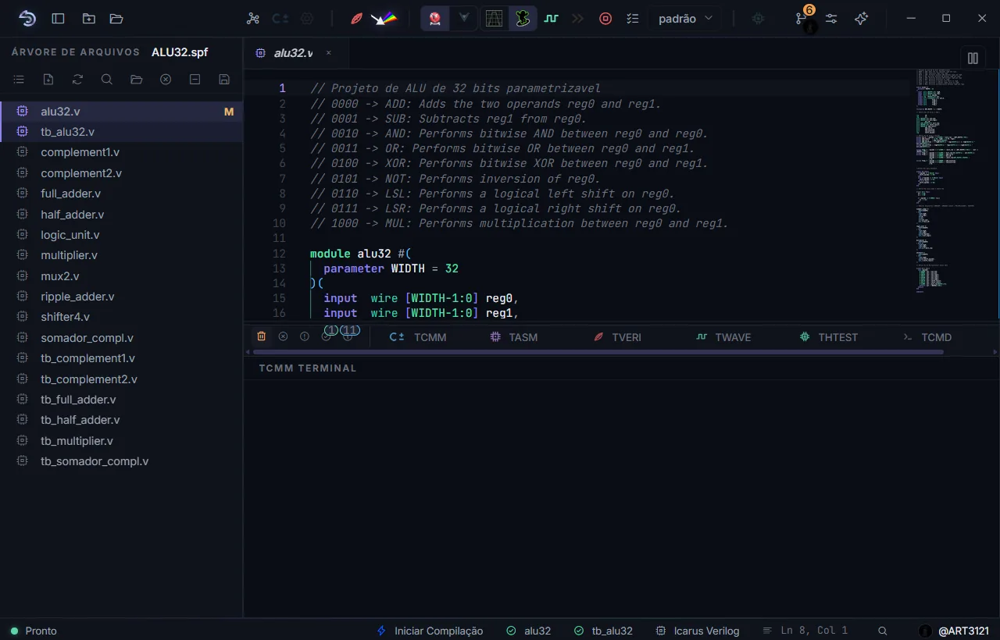
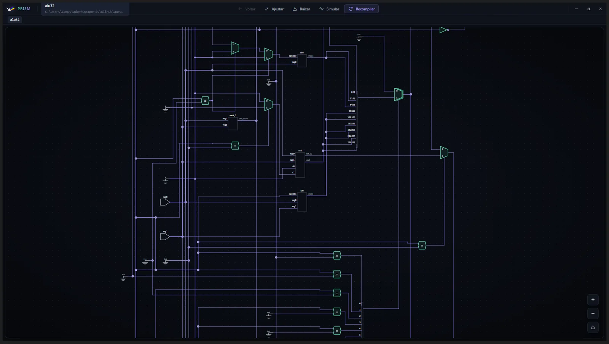
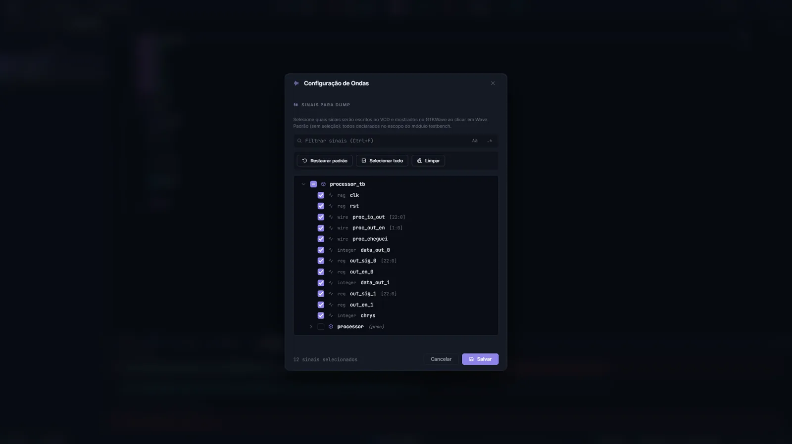
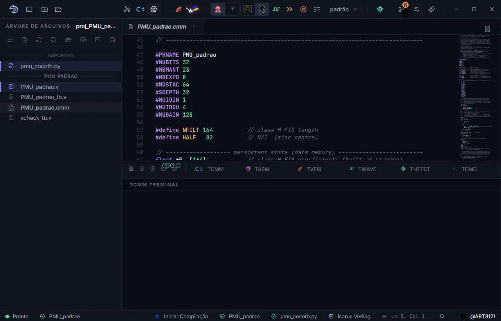
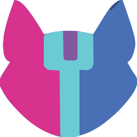
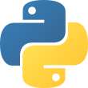

SAPHO
Scalable-Architecture Processor for Hardware Optimization
You do not program this processor. You author it.
Most processors are built first and programmed later. SAPHO turns that around: you write the algorithm in C±, a small dialect of C, and the toolchain emits a Verilog processor shaped by those exact lines. What the program never asks for is never built.
Three programs, three different processors
ula.v · generate if
The whole trick is one instantiation: each instruction your program uses becomes a Verilog parameter set to 1, and each block sits behind a generate if on it. Not used, not built. Pick a program; the dotted tokens are the ones that become hardware, so point at one.
while (1) { x[3] = x[2]; // shift the history x[2] = x[1]; x[1] = x[0]; x[0] = in(0); // new sample soma = x[0] + x[1] + x[2] + x[3]; out(0, soma >> 2); // mean, no divider }
processor #(
.NUBITS(16), .NBMANT(10), .NBEXPO(5),
.LOD(1), .SET(1), .INN(1), .OUT(1),
.JMP(1), .JIZ(1), .ADD(1), .SHR(1)
// every other instruction stays 0
) u_proc ( /* ... */ );
FIG. 1 One button runs the chain: cmmcomp → appcomp → asmcomp → .v + .mif + testbench; the TASM terminal prints this same inventory on every build. The chain in detail · See it as a circuit, in PRISM
A waveform that speaks your language
simulation harness · asm + C± tracksA SAPHO simulation carries two extra tracks: the assembly instruction retiring on each clock, and the C± line it came from. One turn of the filter loop below; run it, or drag across.
x[0] = in(0);
FIG. 2 In the IDE the tracks are decoded straight from the build, for any program, with your variables shown by name. How the tracks work · Waves, viewers and layouts
The datasheet
architecture at a glance#NDSTAC, calls use the return stack #SDEPTHN = M + E + 1 mantissa plus exponent plus sign: floating point is a design parameterprocessor.v core.v instr_dec.v ula.v addr_dec.v<proc>.v + .mif + testbench, ready for simulation or synthesis
For graduate work the language keeps going: an adaptive RLS filter is 66 lines when ⟨w|x⟩ is an expression, and an FFT loads its samples pre-shuffled because data[i) reverses index bits in hardware.
The modules, opened up ·
Dirac notation ·
FFT in hardware ·
The full instruction set
The whole flow in one window
AURORA · desktop IDEAURORA is the desktop IDE of the platform: editor, compilers, two simulators, two waveform viewers and the circuit diagram, no cloud behind any of it.




Bill of materials
one installer · no cloud · no licencesThese are the actual tools that ship, each doing the job it is best at.
 GTKWavewaveform viewer, the classic
07
GTKWavewaveform viewer, the classic
07 Surferwaveform viewer, our fork
08
Surferwaveform viewer, our fork
08
YosysRTL analysis behind the diagram 09 PRISMthe circuit diagram, hierarchy and all
10
PRISMthe circuit diagram, hierarchy and all
10
cocotbtestbenches in PythonField record
deployed · published · taughtRunning at CERN
A SAPHO processor drives the real-time pulse simulator used in test benches for the TileCal calorimeter electronics of the ATLAS experiment.
Published
The architecture and its program-driven resource allocation are described in the platform's reference article, with results on FPGA.
Taught at UFJF
SAPHO is the platform of the Programmable Logic Devices course: every student designs, compiles and simulates a processor of their own. The manual follows the course order, Verilog first, then C±, then both together.
One installer. The whole platform.
The button always fetches the latest release, straight from GitHub.